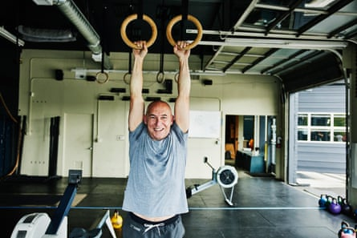
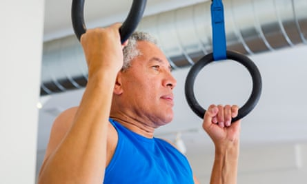
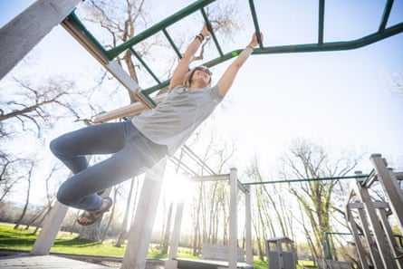

A s a species, we humans have been hanging around for quite a while. Scientific opinions vary on when our ancestors stopped travelling by tree canopy – but recent research suggests that our rotating shoulders and extending elbows first developed to help us climb more efficiently, and we’ve never completely given it up.
Over the past couple of decades, we’ve been rediscovering our ancestral love of dangling, with CrossFit, obstacle races, Ninja Warrior and even Gladiators reminding us of the sheer joy of hanging from a bar, tree branch or set of rings. But there’s plenty of evidence to suggest that, even if you aren’t working on your salmon ladder skills, your body can benefit from the occasional bout of hanging – and it’s one of the simplest things you can do at home.
Firstly, and maybe most obviously, hanging demands (and develops) a fair amount of grip strength. This isn’t just about opening jars – more than one study suggests that a good grip is a solid biomarker of ageing, and a predictor of future illness or disability. What isn’t completely clear is which way the causality in this relationship goes. It’s likely that a good grip goes hand in hand with overall strength – which is a good predictor of all-cause mortality – but it’s also possible that a weak grip is a symptom of “prematurely” ageing cells , rather than a cause. All of that said, if you can develop a stronger grip, it certainly won’t hurt – and can help out with exercises like the deadlift, a full-body movement that involves hauling very heavy bars off the floor and helps develop all-over, functional strength.
Moving downwards (from the bar), hanging might also help your shoulders. “A lot of people find that dead hangs – where you simply hang on to something with straight arms, and let the rest of your body dangle – help to increase their shoulder mobility and stability, which can help to prevent injuries,” says personal trainer Mike Julom . “They also strengthen upper body muscles like the lats and traps, situated in the mid and upper back, which help to address some of the postural problems that can develop from sitting at a desk all day. They also strengthen your core muscles, as you’ll use them to stabilise yourself as you hang.” Orthopaedic surgeon Dr John M Kirsch says he has cured multiple patients (including himself) with shoulder issues through hanging – though the results are entirely anecdotal, and more research is definitely needed.
Dead hangs seem to provide some gentle spinal decompression.Photograph: Thomas Barwick/Getty Images
Dead hangs also seem to provide some gentle spinal decompression – which can feel great if you’ve been sitting down all day or squatting with a heavy barbell on your back. “Some recent studies have shown that dead hangs can make your back more flexible, especially if you have a significant curve in your spine,” says strength and conditioning specialist Rachel MacPherson. “Though it’s not always a great idea to jump straight in with them, depending on your spinal health,” she says.” Scoliosis sufferers, for example, are often advised to work in a ‘semi-hanging’ position, with their feet on the floor.”
So where do you start? First, you’ll need somewhere to hang out. If you can manage it, the best option is to get a bar that will let you do pull-ups in your house – there are plenty of options to fit most doorframes, ranging from removable-in-seconds to semi-permanent. “I have one on my landing and it makes it really easy to do a minute hang in the morning and one at night before bed,” says strength and movement coach Jon Nicholson . “I’ve also got a set of rings hanging from a tree in the garden, which I barely get to use because the kids insist on having it set up for them to hang on.” Try to fit your hanging options in the kitchen, the garage, wherever, and you’ll find yourself clocking up the hangs.
From here, one excellent option is to just build a hanging habit, by hanging for a few seconds every time you pop to the kitchen for a cup of tea or wander to the loo. If your strength or weight is going to make more than 20 seconds of hanging difficult, start simple.
“You can adjust the resistance by having the bar or rings at a lower height, or a small step underneath you, so that your feet can touch the ground in a squat position,” says personal trainer Amanda Grimm. “You can adjust the intensity by gently lifting your feet up until you have just your toes on the floor.”
It’s worth spending a bit of time on both ‘passive’ and ‘active’ hangs.Photograph: Marc Romanelli/Getty Images/Tetra images RF
It’s also worth spending a bit of time on both “passive” and “active” hangs, says Nicholson. “An active hang is where your shoulders are pulled back and down, while a passive one is where you just hang without exerting any extra effort,” he says. “One simple way of categorising upper body movements is into ‘pushes’ and ‘pulls’ – so, if we think of a plank as an exercise that works the major muscles involved in pushing things away from the body, the active hang works the muscles involved in pulling things towards the body. It’s the first motion contained within a pull-up or chin-up, so extremely beneficial to work on if you want to achieve your first chin-up, or, for rock climbers or swimmers to work on their shoulder strength.” (For the uninitiated, most serious pullers think of chin-ups as the one where your palms face towards you, which works your biceps slightly more, while for pull-ups your hands face away, emphasising your back muscles.)
Once you’ve got the hang (sorry) of both of these, you can start thinking about introducing tougher variations of the movement – but don’t try to progress too quickly. “Training is all about the body adapting to the stimulus we place on it, so it’s important to think ‘outcome’ rather than ‘output’,” says Nicholson. “You can’t just do a one-off 60-second hang and think: “Right, I can do that; I don’t need to do it again.” That’s output with very little outcome. Think about the benefits – the outcome in terms of grip strength, shoulder health and so on – of doing that 60-second hang several times a day for 30 days, or even longer.”
After this, you’ll be better equipped for tougher movements, such as brachiating – the technical term for swinging from hold to hold like a gibbon – and possibly pull-ups. You might eventually even progress to the “muscle-up” – a movement where you pull yourself above the bar and push yourself up until you’re above the bar with straight arms – or the parkour “lache”, where you leap from one bar to another with both hands at the same time. But if you don’t ever get as far as these sorts of circus tricks, don’t worry – there are plenty of benefits to even the simplest hangs. “I find dead hangs are a great time to focus on breathing exercises and even meditation and mindfulness,” says Grimm. “It help keeps the body calm, and can actually help you to grip for longer.”
“It’s one of the first things I get people to do,” says Nicholson. “Most of them moan about how much it hurts their hands, and they absolutely hate the idea of just hanging around for multiple sets. And then I’m like, yeah, you need to get a bar at home and do this all the time – and within a month, the people who actually do it are addicted to it. They walk into the gym and the first thing they do before they start talking to me is hang from a pull-up bar. Once you get through those first few days, it feels amazing.” Give it a try, and reconnect with your ancient ancestors. Top tip, though: you are allowed to use your thumbs.
Photograph: crotography/Getty Images/RooM RF
Swing states
Once you can hang for 30 to 60 seconds a few times a day, it’s time to add some more active hanging to your arsenal.
Scapula pull-ups
These activate some of the muscles that a “normal” pull-up uses, but are a bit less demanding. Start in a dead hang, then squeeze your shoulder blades together to do a reverse “shrug” to slightly lift your body upwards. Hold at the top position before you lower back down.
Kip swings
These are a simpler version of the swing that gymnasts use to set up for more impressive moves – but don’t try them on a bar unless it’s very well secured to a wall or squat rack. You’re going to move through two positions: the “hollow body”, with your body behind the bar and feet ahead of you, and the “Superman”, with your chest out and feet back. Do them with control, and feel the stretch in your shoulders.
Side-to-side swings
Again, don’t try this with a wobbly bar. Swing your hips slightly from side to side, building momentum to take the weight off one arm. At the top of each swing, quickly take one hand off the bar and then replace it, swinging back to the other side.
Brachiation
There are two ways to tackle the traditional monkey bars: with bent elbows, which is fast but tiring, and with outstretched arms, which is more efficient and takes practice. Try both.